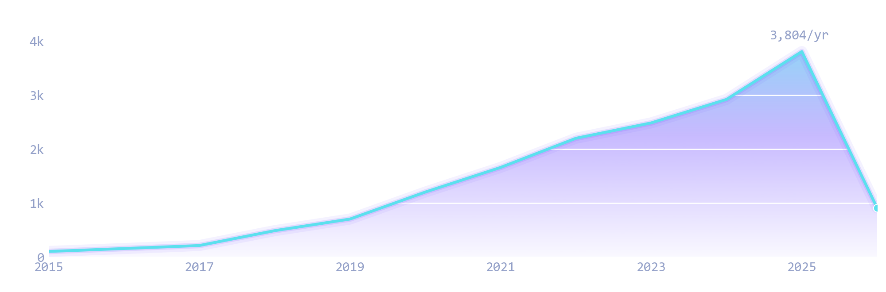
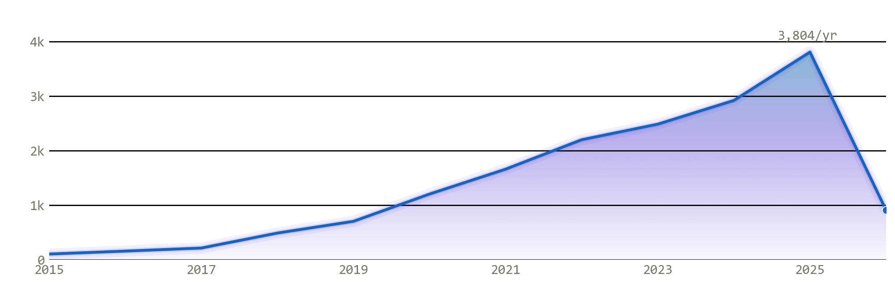

It's a matter of time: Empirical Constraints on Supernova Yields and Delay Times from Dwarf Spheroidal Galaxies
0citations
Research output
130 peer-reviewed papers and preprints — open, accessible, and reproducible. Pulled from SAO/NASA ADS & Google Scholar.


No papers match your search/filters.